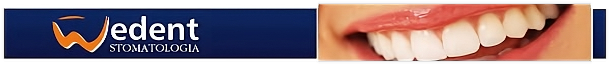
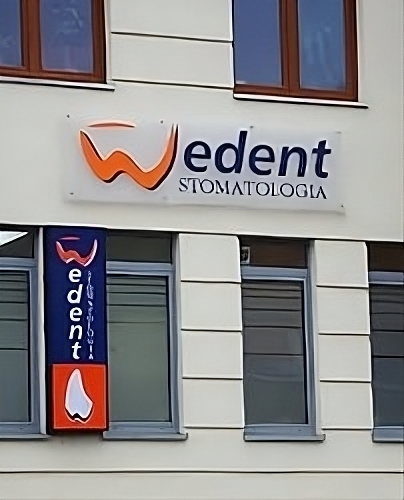

Witamy serdecznie na stronie internetowej prywatnego gabinetu stomatologicznego WEDENT.
Zapraszamy Państwa do naszego gabinetu gdzie w miłej i kameralnej atmosferze znajdziecie Państwo kompleksową opiekę stomatologiczną na najwyższym światowym poziomie.
Oferujemy pełny zakres usług stomatologicznych w tym: implanty, ortodoncję, chirurgię stomatologiczną, leczenie zachowawcze, wybielanie zębów, protetykę, stomatologię estetyczną oraz leczenie kanałowe pod mikroskopem.
Nie boimy się trudnych przypadków, by sprostać Państwa wymaganiom wciąż podnosimy swoje kwalifikacje na licznych kursach w kraju i za granicą.